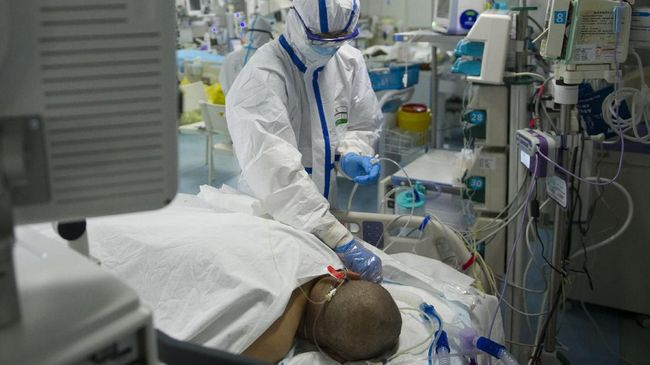

CNN Indonesia | Rabu, 04/03/2020 08:47 WIB
Ilustrasi penanganan pasien positif virus corona (Covid-19). (AFP/STR)
Jakarta, CNN Indonesia -- Sejak wabah virus corona (covid-19) mulai terkuak di China pada
Desember tahun lalu kemudian merebak ke seluruh dunia, baru terungkap ada pasien positif
terinfeksi di Indonesia pada awal pekan ini.
Sebelumnya, Gubernur DKI Jakarta Anies Baswed pada Minggu (1/3) mengungkap ada
pengawasan terhadap ratusan orang terkait covid-19. Sehari setelahnya, pada Senin (2/3) pagi,
Presiden RI Joko Widodo (Jokowi) didampingi Menteri Kesehatan Terawan Agus Putranto
mengumumkan ada dua warga Depok yang jadi pasien positif corona.
Pengumuman yang disampaikan Jokowi pada Senin pagi itu pun berbuah kepanikan. Berdasarkan liputan
CNNIndonesia.com, terjadi pembelian sporadis masker, cairan desinfektan, hingga bahan
kebutuhan pokok di sejumlah wilayah Indonesia terutama DKI Jakarta dan sekitarnya.
Pengamat Kebijakan Publik, Trubus Rahadiansyah, mengatakan kepanikan di tingkat masyarakat itu
tak lepas dari ketidakjelasan pemerintah Indonesia dalam menanggapi wabah virus corona.
Padahal, dalam dua bulan terakhir, setidaknya negara-negara di seluruh dunia melahirkan kebijakan
masing-masing yang bisa dikatakan tegas terkait risiko wabah corona.
"Masyarakat panik membeli kemudian kedua nilai tukar Rupiah anjlok, banyak pengusaha yang rugi
juga, perhotelan dan pariwisata, pemerintah rugi. Ini dampaknya panjang jadinya," ujar Trubus menjelaskan dampak
dari ketidakjelasan itu saat dihubungi CNNIndonesia.com, Selasa
(3/3).